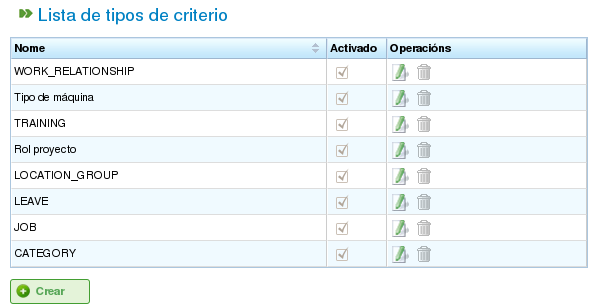

Kriterier
Contents
Kriterier är element som används i programmet för att kategorisera både resurser och uppgifter. Uppgifter kräver specifika kriterier och resurser måste uppfylla dessa kriterier.
Här är ett exempel på hur kriterier används: En resurs tilldelas kriteriet "svetsare" (vilket innebär att resursen uppfyller kategorin "svetsare"), och en uppgift kräver kriteriet "svetsare" för att slutföras. Följaktligen, när resurser tilldelas uppgifter med generisk tilldelning (till skillnad från specifik tilldelning), kommer medarbetare med kriteriet "svetsare" att beaktas. För mer information om de olika typerna av tilldelning, se kapitlet om resurstilldelning.
Programmet tillåter flera operationer som rör kriterier:
- Kriteriadsministration
- Tilldela kriterier till resurser
- Tilldela kriterier till uppgifter
- Filtrera entiteter baserat på kriterier. Uppgifter och projektobjekt kan filtreras efter kriterier för att utföra olika operationer i programmet.
Det här avsnittet förklarar bara den första funktionen, kriterieadministration. De två typerna av tilldelning täcks senare: resurstilldelning i kapitlet "Resurshantering" och filtrering i kapitlet "Uppgiftsplanering".
Kriterieadministration
Kriterieadministration kan nås via administreringsmenyn:

Flikar i menyn på första nivån
Den specifika operationen för att hantera kriterier är Hantera kriterier. Med denna operation kan du lista de kriterier som finns i systemet.

Lista över kriterier
Du kan komma åt formuläret för att skapa/redigera kriterier genom att klicka på knappen Skapa. För att redigera ett befintligt kriterium, klicka på redigeringsikonen.

Redigering av kriterier
Formuläret för redigering av kriterier, som visas i föregående bild, låter dig utföra följande operationer:
- Redigera kriteriets namn.
- Ange om flera värden kan tilldelas samtidigt eller bara ett värde för den valda kriterietypen. En resurs kan till exempel uppfylla två kriterier: "svetsare" och "svarvare".
- Ange kriterietypen:
- Generisk: Ett kriterium som kan användas för både maskiner och medarbetare.
- Medarbetare: Ett kriterium som bara kan användas för medarbetare.
- Maskin: Ett kriterium som bara kan användas för maskiner.
- Ange om kriteriet är hierarkiskt. Ibland behöver kriterier behandlas hierarkiskt. Till exempel innebär tilldelning av ett kriterium till ett element inte att det automatiskt tilldelas element som härleds från det. Ett tydligt exempel på ett hierarkiskt kriterium är "plats". En person som är utsedd med platsen "Galicien" tillhör till exempel också "Spanien".
- Ange om kriteriet är auktoriserat. Det här är hur användare inaktiverar kriterier. När ett kriterium har skapats och använts i historiska data kan det inte ändras. Istället kan det inaktiveras för att förhindra att det visas i urvalslistor.
- Beskriva kriteriet.
- Lägga till nya värden. Ett textinmatningsfält med knappen Nytt kriterium finns i formulärets andra del.
- Redigera namnen på befintliga kriterievärden.
- Flytta kriterievärden uppåt eller nedåt i listan över aktuella kriterievärden.
- Ta bort ett kriterievärde från listan.
Formuläret för kriterieadministration följer formulärbeteendet som beskrivs i introduktionen och erbjuder tre åtgärder: Spara, Spara och stäng och Stäng.